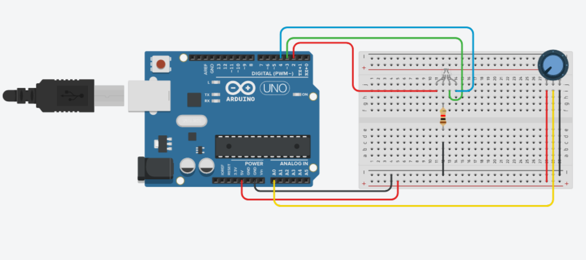
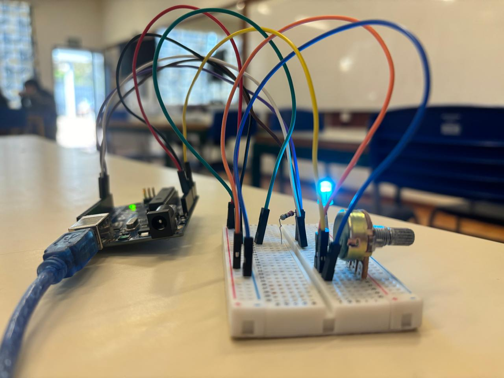
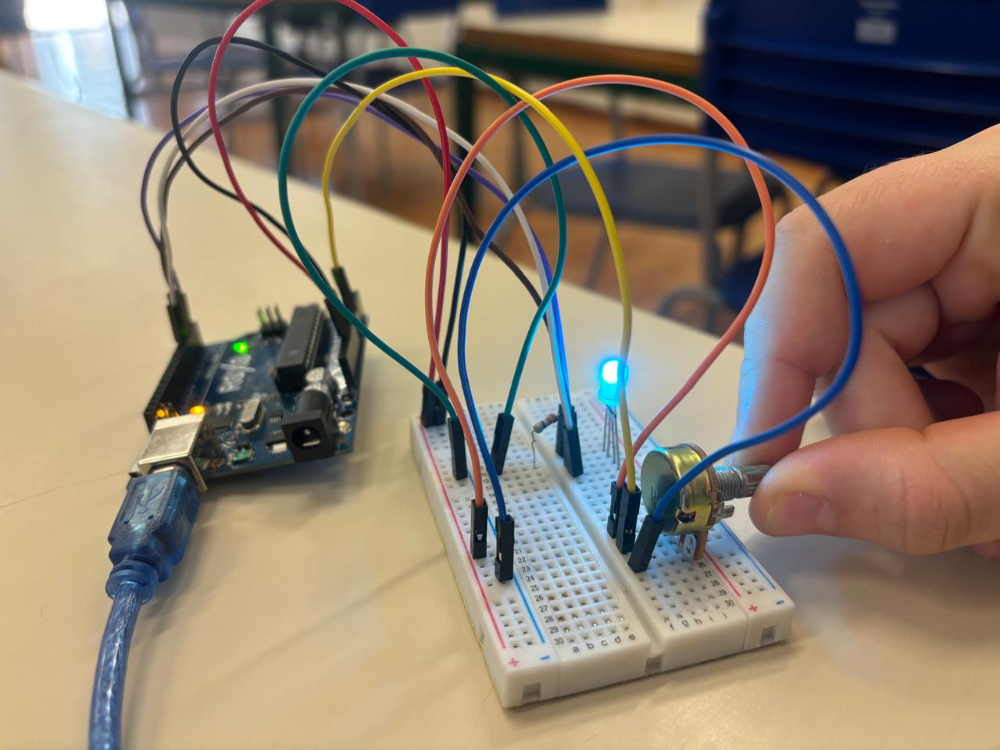
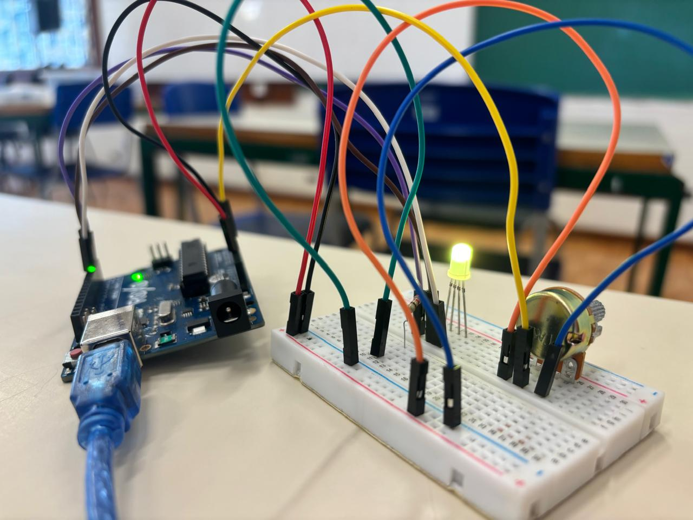

O que é?
O LED RGB é um componente eletrônico utilizado para produzir luz em diferentes
cores. Ele é parecido com um LED comum, mas possui três LEDs dentro de um único
componente: um vermelho (Red), um verde (Green) e um azul
(Blue). Por isso, recebe o nome RGB, que vem das iniciais dessas três
cores.
Cada uma das três cores pode ser controlada separadamente. Ao aumentar ou diminuir a intensidade de
cada LED interno, é possível fazer uma mistura de cores, criando uma grande
variedade de tonalidades. Por exemplo, quando o vermelho e o verde são acesos juntos, podemos obter
amarelo. Quando o vermelho e o azul são combinados, podemos produzir roxo.
O LED RGB normalmente possui quatro terminais: um para cada uma das três cores e um
terminal comum. Esse terminal comum pode ser do tipo ânodo comum ou cátodo
comum, dependendo do modelo do LED. A forma de ligação e de controle muda de acordo com
o tipo utilizado.
Uma característica importante do LED RGB é que cada cor pode ter sua intensidade controlada
individualmente. Em projetos com Arduino, por exemplo, é possível utilizar a técnica
chamada PWM para controlar a quantidade de energia enviada para cada cor. Dessa
forma, em vez de apenas ligar ou desligar o LED, podemos controlar o brilho de cada uma das três
cores e conseguir diferentes combinações.
Por ser pequeno, simples de controlar e capaz de produzir várias cores, o LED RGB é bastante
utilizado em projetos eletrônicos, robótica, iluminação, indicadores e sistemas
interativos. Ele também é muito utilizado em projetos com Arduino para demonstrar
conceitos de programação e eletrônica.
Em resumo, o LED RGB reúne três fontes de luz — vermelho, verde e azul — em um único
componente, permitindo criar diversas cores por meio da combinação e do controle da
intensidade de cada uma delas.
Materiais Utilizados
Arduino UNO R3
1 Unidade
Protoboard
1 Unidade
Cabo USB
1 Unidade
Jumpers
9 Unidades
Potenciômetro Linear
1 Unidade
LED RGB;
1 Unidade
Resistor
220 Ω
Imagem do Circuito

A imagem acima apresenta a montagem do circuito desenvolvido para este projeto. Nela é possível visualizar a ligação entre o Arduino UNO, a protoboard, o potenciômetro, o resistor, o Led RGB e os jumpers utilizados para demonstrar as três cores base que o Led consegue emitir.
Acessar Projeto no TinkercadCódigo Fonte
LED RGB
/* ATENÇÃO! */
/* Nas duas primeiras linhas deste código, você deverá informar*/
/* se o LED RGB utilizado é de ânodo comum ou cátodo */
/* comum para o correto funcionamento deste protótipo */
/* descomentando(removendo as barras) da linha */
/* correspondente ao seu LED RGB. */
/***************************************************************/
// char modelo[] = "Ânodo Comum";
// char modelo[] = "Cátodo Comum";
/* Define o pino analógico A0 para o potenciômetro. */
int Pin_pot = A0;
/* Variável que armazenará os dados do potenciômetro. */
int Pot = 0;
/* Define o pino digital 2 para o LED Vermelho. */
int Led_R = 2;
/* Define o pino digital 3 para o LED Verde. */
int Led_G = 3;
/* Define o pino digital 4 para o LED Azul. */
int Led_B = 4;
/* Variáveis para controle dos LEDs. */
int ligar;
int desligar;
void setup() {
/* Define o pino Led_R como SAÍDA. */
pinMode(Led_R, OUTPUT);
/* Define o pino Led_G como SAÍDA. */
pinMode(Led_G, OUTPUT);
/* Define o pino Led_B como SAÍDA. */
pinMode(Led_B, OUTPUT);
/* Rotina que verifica o tipo de LED RGB utilizado e */
/* adequa os parâmetros para ligar e desligar o LED. */
if (modelo[0] != 'C') {
ligar = 0;
desligar = 1;
} else {
ligar = 1;
desligar = 0;
}
/* Inicia com os LEDs desligados. */
digitalWrite(Led_R, desligar);
digitalWrite(Led_G, desligar);
digitalWrite(Led_B, desligar);
}
void loop() {
/* Armazena os dados do potenciômetro na variável Pot. */
Pot = analogRead(Pin_pot);
/* Se Pot estiver entre 0 e 341, faça... */
if (Pot >= 0 && Pot <= 341) {
/* Ligue o LED Vermelho. */
digitalWrite(Led_R, ligar);
/* Senão... */
} else {
/* Desligue o LED Vermelho. */
digitalWrite(Led_R, desligar);
}
/* Se Pot estiver entre 342 e 682, faça... */
if (Pot >= 342 && Pot <= 682) {
/* Ligue o LED Verde. */
digitalWrite(Led_G, ligar);
/* Senão... */
} else {
/* Desligue o LED Verde. */
digitalWrite(Led_G, desligar);
}
/* Se Pot estiver entre 686 e 1023, faça... */
if (Pot >= 683 && Pot <= 1023) {
/* Ligue o LED Azul. */
digitalWrite(Led_B, ligar);
/* Senão... */
} else {
/* Desligue o LED Azul. */
digitalWrite(Led_B, desligar);
}
}
Vídeo Demonstrativo
Biblioteca de Imagens


